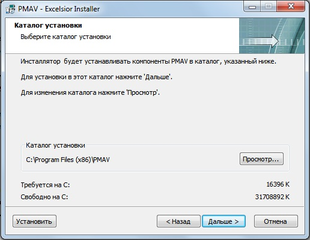
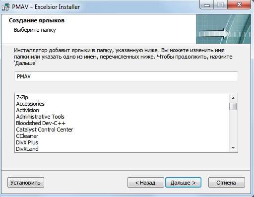
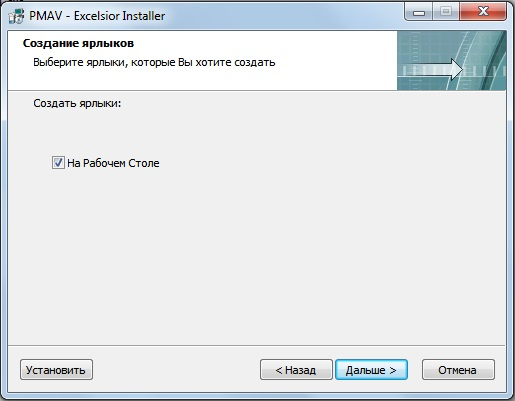
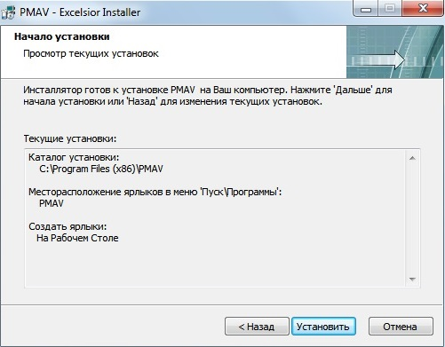

Для начала установки системы необходимо запустить исполняемый файл с расширением .exe, предназначенный для запуска программы установки системы.
Будет выведено диалоговое окно «Открыть файл - предупреждение системы безопасности».
Для продолжения установки необходимо нажать кнопку «Выполнить».
На данном этапе отображается диалоговое окно Мастера установки системы, в котором отображено название и версия устанавливаемого приложения.
Для того, что бы продолжить установку, необходимо нажать кнопку «Далее». Нажатие кнопки «Отмена» приведет к закрытию программы и отмене установки системы.
На данном этапе требуется выбрать путь для установки системы.
Пользователь может указать любое другое место для установки. Для этого требуется нажать кнопку «Просмотр» и в появившемся окне выбрать путь. Путь установки по умолчанию зависит от устанавливаемой системы.

Инсталлятор добавит ярлыки в папку, указанную ниже. Пользователь может изменить имя папки, или указать одно из представленных имен. 
Пользователь выбирает, создать или не создавать ярлык на Рабочем Столе. Для того, чтобы не устаналивать ярлык, необходимо снять галочку. 
На данном этапе производится подтверждение указанных ранее параметров установки. В том случае, если данные верны, необходимо нажать кнопку «Установить» - начнется установка системы. Если же данные были указаны не верно, нужно нажать кнопку «Назад» - это позволит вернуться на предыдущие шаги для внесения нужных данных. 
На данном этапе проходит установка системы
По завершению установки на экран будет выведено диалоговое окно завершения установки системы. Для выхода из мастера-установщика необходимо нажать «Выход»
В выпадающем окне можно выбрать метод сканирования: метод с использованием md5-сигнатур или метод с использованием hex-сигнатур.
В выпадающем окне можно выбрать режим потребления ресурсов: при выборе "High" будет использован многопоточный метод сканирования, который увеличивает потребление ресурсов, но так же и скорость. При выборе "Low" скорость будет значительно ниже, так как будет использоваться однопоточный метод, но потребление ресурсов будет низким.
Кнопка "Scan root" позволяет нажатием всего одной кнопки просканировать системную директорию.
Нажмите на нее, и сканирование начнется.
Если во время сканирования компьтера будет обнаружен вирус, то появится это окно.
Вы можете выбрать любой из трех вариантов:
1)Вы можете удалить файл, если доверяете решению нашей программы (кнопка Delete)
2)Вы можете проигнонировать сообщение, если уверены, что файл не опасен (кнопка Ignore)
3)Если Вы сомневаетесь в принятии решения, мы рекомендуем Вам использовать функцию "Карантин" (кнопка "Quarantine")
Если вы не уверены, является ли обнаруженный файл действительно вредоносным, вы можете добавить его в карантин.
При нажатии кнопки "Quarantine" файл будет перемещен в папку (директория антивируса)/quarantine. Он будет зашифрован и не сможет причинить вред Вашему компьютеру.
Достать для файл по анализу можно с помощью программы dqr.exe и системной консоли windows.
Для этого нужно включить cmd.exe, с помощью команды cd зайти в папку с dqr exe (по умолчанию-это папка со всеми исполняемыми файлами нашей программы) и ввести команду dqr.exe quarantine/(имя файла).quar
Файл будет лежать в папке "quarantine" без расширения .quar

Если вы включите защиту в реальном времени, то антивирус будет отслеживать программы, добавляющиеся в подключи реестра, которые отвечают за автозагрузку. Кроме того,антивирус будет отслеживать изменения файла hosts.
При возникновении любого изменения в указанных местах антивирус оповестит пользователя и предложит ему выбрать, разрешать ли эту операцию, или нет.